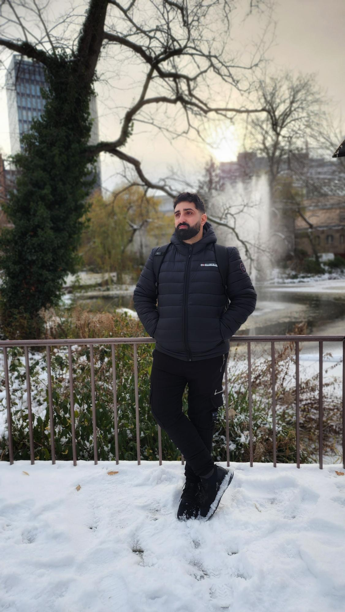

My name is Netanel Gabay, and I am a student studying Quality Assurance (QA) at the College of Automation under the guidance of Gal Matalon. I dedicate a significant amount of time to learning and developing in this field. Currently, I am on a journey to build a career in Quality Assurance, constantly expanding my knowledge and skills.
I believe that integrity, curiosity, perseverance, and collaboration guide me in both my personal and professional life.
Feel free to get to know me better through the "About Me" page and explore my projects showcased in the "Portfolio." I would love to hear from you if you have any questions or ideas for collaboration.
Thank you for visiting.

About Me
My name is Netanel Gabay I'm 35 years old I'm engaged to Shayli, i was born at Ramat Gan and moved to Kiryat Bialik recently.
For the past six years I have worked in the Israel Police as a patrol officer,recently I decided to look for a new challenge out of love for the world of computers.
After checking several fields I decided to go study Quallity Assurance course at Automation Colleg in tel aviv.
In my free time I like to watch Marvel and mainly based on reality series and movies and go to stand-up shows.
also I like to watch football games and play on playstation FIFA games, my favorite team is Real Madrid since I was a child.
I'm a passionate cooking enthusiast, I enjoy experimenting with new recipes and creating culinary experiences.
I love traveling both locally and globally to explore a wide variety of cuisines and .photograph unforgettable moments and landscapes.